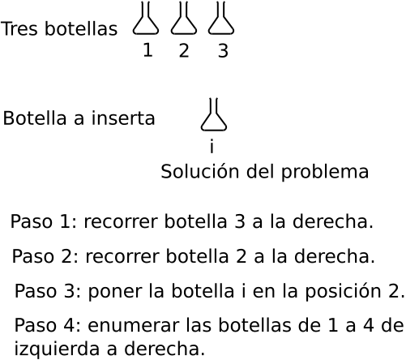
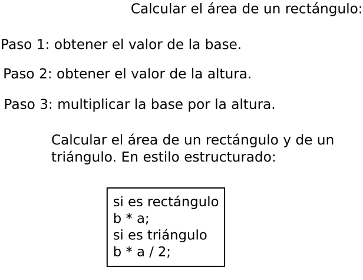

Los paradigmas de programación
Los tipos de paradigmas de programación.
Imperative Programming, Theophilus Edet, 2025
Programming paradigm, Michael Williams, 2025
El programador define explicitamente las instrucciones que cambian el estado del sistema paso por paso. Le da más importancia al procedimiento y al flujo de control.

Por su objetivo: el lenguaje de programación sirve para comunicarse con la computadora para solicitar una operación o una información.
Por ejemplo: ordenar de menor a mayor los elementos de una lista de números.
numeros = [3,1,4,1,5]
resultado = []
for x in numeros
if x > 2
resultado.append(x)
print(resultado)
Investigación de José Sánchez Juárez
El paradigma imperativo
El programador define explicitamente las instrucciones que cambian el estado del programa paso por paso. Le da más importancia al procedimiento y al flujo de control.
Tomado del diccionario de la Real Academia Española.
2. m. Teoría o conjunto de teorías cuyo núcleo central se acepta sin cuestionar y que suministra la base y modelo para resolver problemas y avanzar en el conocimiento.
3. m. Ling. Relación de elementos que comparten un mismo contexto fonológico, morfológico o sintáctico en función de sus propiedades lingüísticas.
4. m. Ling. Esquema formal en el que se organizan las palabras que admiten modificaciones flexivas o derivativas.
Paradigma de programación
Es la forma fundamental de pensar para escribir y organizar el código. Es una mentalidad. Es como se resuelve un problema, se estructura una solución y como se razona acerca de un sistema. No es un estilo de escribir código.
El paradigma de la programación es una forma de pensar que guia como estructurar y resolver problemas mediante código. Esto te muestra como abordar la solución de un problema: que conceptos, que patrones debes usar, y como debes administrar la complejidad.
El paradigma es un modelo mental o cosmovisión. Es el lente por medio del cual definimos los problemas y construimos los programas. Para lo cual, los paradigmas son los siguientes:
Un paradigma te da un marco de trabajo para organizar el código y manipular el flujo de ejecución.
El paradigma nos permite lo siguiente:
Los tipos de paradigmas son:
Formas de programar.
Programar no es escribir instrucciones para una computadora. Es resolver problemas por medio de estructuras, lógica, e intenciones.
El siguiente enunciado es de entrada simple/salida simple: El siguiente enunciado es un loop: El loop que también puede ser de la siguiente forma: Se puede hacer una búsqueda: El último elemnto insertado es A[n]. Un elemnto A[i] puede examinarse si está en la tabla, es decir, si i ≥ 1. Se puede hacer de la siguiente manera: Busqueda en una tabla: Problema 1: se tienen tres botellas iguales numeradas del 1 al 3 y se quiere insertar una cuarta botella etiquetada con i, entre las botellas uno y dos. ¿Que es lo que se debe hacer?  Problema 2: calculara el área de un rectángulo. ¿Que es lo que se debe hacer? 
while x ≥ y do
x := x - y ;
end
loop while E do LE
loop
{x ≥ 0 y y > 0}
while x ≥ y do
x := x - y
end
comience con el último elemento insertado
while quedan elementos por examinar do
if este elemento es x then
return su posición
else
considere el elemento de la izquierda
end
end
no se encontró, por lo tato return 0
i := n;
while i ≥ 1 do
if x := A[i] then
return i ;
else
i := i - 1 ;
end
end
return 0
A[0] := x;
i := n;
while x ≠ A[i] do
i := i - 1;
end
return i;
while ( x != A[i] )
i = i - 1;
while ( x != A[i] )
--i;
numeros = [
while ( x != A[i] )
--i;
Usando el paradigma imperativo:
Construir una estructura lego: tomar el bloque rojo de 2x4 y ponerlo en la parte azul de 4x4. Luego, tomar el bloque amarillo de 2x2 y ponerlo arriba del bloque rojo.
Imperative Programming, Theophilus Edet, 2025
El paradigma declarativo
El programador especifica la meta y las salidas del programa para determinar como lograrlo. Emfatiza la lógica del programa sin detallar paso por paso las instrucciones.
Usando el paradigma declarativo:
Construir una torre con una base roja y una parte superior de amarillo.
Imperative Programming, Theophilus Edet, 2025